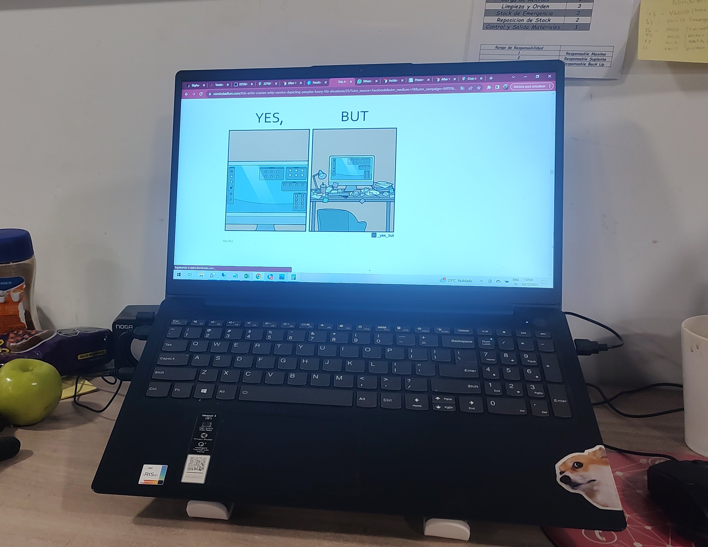
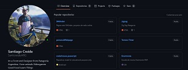
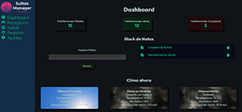
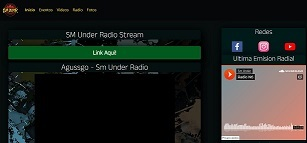
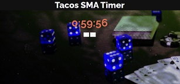
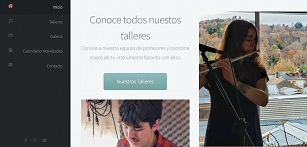

Casa Ferracioli S.A.
Sistemas
Actualmente me desempeño en el sector de sistemas de Casa Ferracioli S.A.
Actualidad
Actualmente me desempeño en el sector de sistemas de Casa Ferracioli S.A.
Les agradezco por tomarse el tiempo de visitar este sitio, el cual estara en continuo desarrollo al igual que todos los demas proyectos en los que estoy involucrado actualmente.
Actualmente participo como colaborador en la startup Apolo Cayser
Me apasiona el desarrollo web y backend, la administracion de bases de datos y la creacion de soluciones innovadoras.
Mis especialidades son los ERP, el uso de los stacks TALL y MERN
Mas alla de eso, tuve experiencias laborales muy diferentes que me han enriquecido profesionalmente en campos y empresas muy variadas.
Mis pasatiempos son el ciclismo, la construccion y la lectura.
Me gusta aprender nuevas tecnologias y compartir conocimientos con otros profesionales. Si queres colaborar en algo no dudes en contactrarme.

Mis nuevos desarrollos seran publicados regularmente en Github.

Single Page Aplication, diseñada para administracion de alojamientos turisticos, programada en Javascript Vanilla.
Sitio Web de Zig Zag Patagonia, empresa dedicada a la confeccion de accesorios y reparacion de equipo deportivo, en la ciudad de San Martin de los Andes.

Sitio web de la Organizacion SM Under. Eventos de Hip Hop, Radio y galeria de imagenes.

Sencillo Timer diseñado para torneos de poker.

Proyecto pagina web escuela de musica Enarmonia
{kind=link}
{kind=link}
{kind=link}
{kind=link}
{kind=link}
{kind=link}